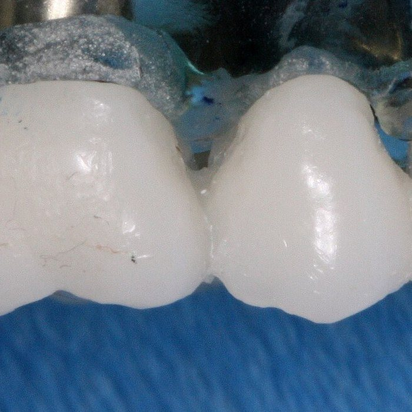
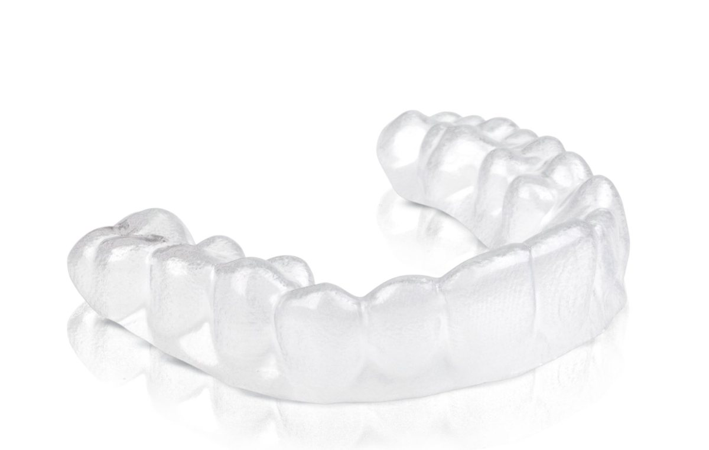
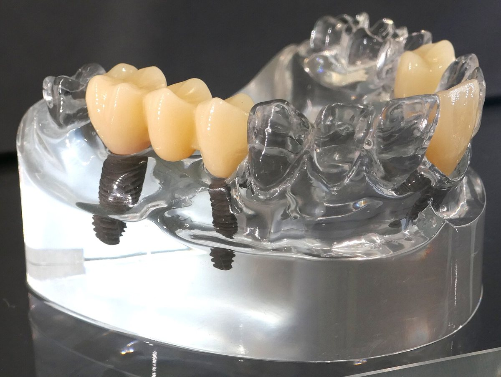
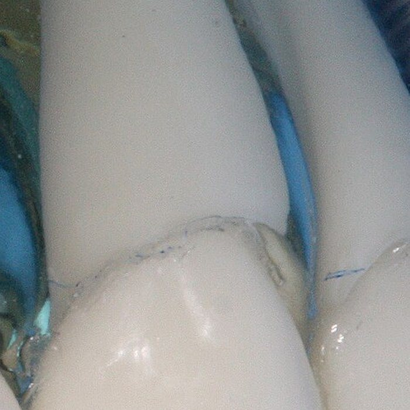
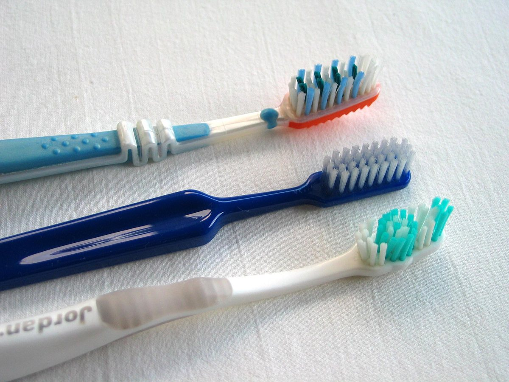

Sorrisos lapidados há 15 anos
Consultório da Dra. Camila Balbino, cirurgiã-dentista (CRO [A DEFINIR]): estética do sorriso, implantes e prevenção.
Sobre a Dra. Camila
Há mais de 15 anos a Dra. Camila Balbino cuida de sorrisos como quem lapida uma pedra: faceta por faceta, sem pressa, até a luz voltar.
Trajetória
[A DEFINIR: formação, especializações e cursos que ela quer destacar.]
Como ela atende
Cada sorriso é avaliado por inteiro antes de qualquer proposta: dentes, gengiva, mordida e o que incomoda você.
Tratamentos
Da prevenção à estética, o que o consultório oferece. A indicação certa sai da sua avaliação.
-
Facetas e lentes de contato
Lâminas finas coladas na frente dos dentes para corrigir cor, forma e tamanho.

-
Alinhadores
Placas transparentes trocadas em etapas, que alinham os dentes sem bráquetes aparentes.

-
Implantes e próteses
Repõem o dente que falta com raiz fixa no osso, ou com prótese sob medida.

-
Clareamento
Deixa os dentes mais claros com acompanhamento, no consultório ou em casa.

-
Prevenção e limpeza
Revisões e limpeza periódicas, a base para qualquer sorriso durar.

Como funciona
Do primeiro “oi” no WhatsApp ao acompanhamento depois do tratamento, são cinco passos, nesta ordem.
Conversa
Você manda uma mensagem no WhatsApp, conta o que quer melhorar e escolhe o horário.
Pelo WhatsAppAvaliação
A Dra. Camila examina dentes, gengiva e mordida, e ouve o que te incomoda.
1ª consultaPlano
Você recebe as opções de tratamento explicadas sem pressa, com etapas e prazos.
Na avaliaçãoTratamento
Cada etapa é feita no consultório, com revisão do resultado a cada retorno.
No consultórioCliente Smart
Acompanhamento para quem já é paciente. [A DEFINIR: o que inclui.]
Depois do tratamento
Tire suas dúvidas
-
É uma avaliação: conversa sobre o que você quer, exame dos dentes, gengiva e mordida e, se precisar, pedido de exames de imagem. Você sai sabendo quais são as opções para o seu caso.
-
A maior parte dos procedimentos é feita com anestesia local quando necessário. Na avaliação, a Dra. Camila explica o que você vai sentir em cada etapa.
-
As duas são lâminas coladas na frente do dente. A lente é mais fina e costuma pedir pouco ou nenhum desgaste; a faceta corrige mais forma e cor. Qual serve para você depende da avaliação.
-
O alinhador é removível e quase invisível, mas precisa ser usado a maior parte do dia. O aparelho fixo não sai da boca. A escolha depende do seu caso e da sua rotina.
-
[A DEFINIR: formas de pagamento e parcelamento aceitos pelo consultório.]
Ficou outra dúvida? Pergunte pelo WhatsApp.
Agende sua avaliação
Marque o que você quer lapidar no seu sorriso. Cada escolha acende uma parte do círculo, e a mensagem para o WhatsApp sai pronta.